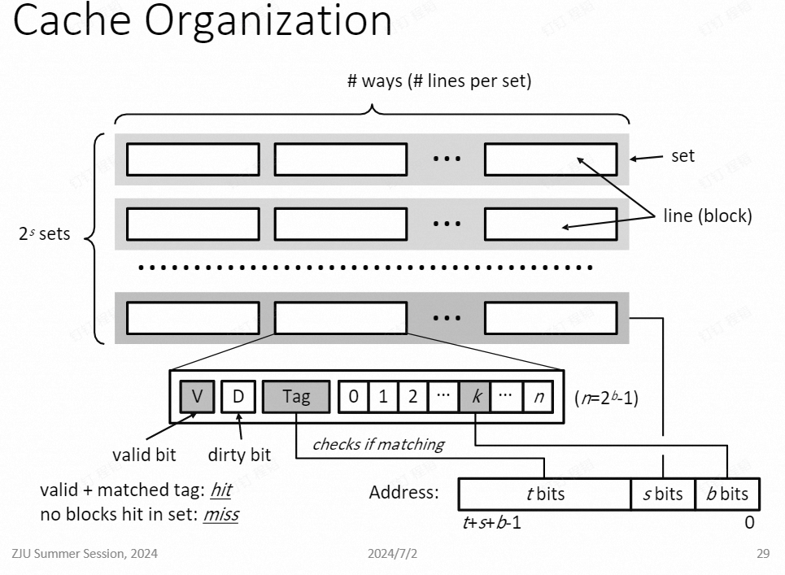

Lec.02 体系结构与高性能基础
约 979 个字 • 预计阅读时间 2 分钟
Intro¶
- 背景：数据科学、计算需求
- 方法：增加节点数
- 挑战
- 高速互联
- 内联架构
- 大规模处理的输入和输出（1M+cores）
- 储存架构和储存容量
- 编程/调试/分析
- 资源管理，任务调度
Prerequisite Checklist¶
- Coding
- Commpiling
- Debugging (gdb)
ISA and x86 Intructions¶
C 编程¶
- 黑盒操作
- 顺序执行
- 抽象内存
指令¶
- 指令集 (ISA)
- x86, x86-64, ARM, MIPS, Risc-V
- 通常是高级语言编译产生
- Code forms
- Machine Code: Byte-level 指令
- Assembly Code: 机器码的文本表达
Assembly/Machine Code View¶
- CPU
- PC (Program counter)
- Register file
- Condition Code
- Memory
- address
- data
- instructions
Assembly Operations¶
- Arithmetic and Logic operations (e.g. add, xor)
- Transferring data between memory and register (mov)
- Control Logic
- Jumps to/from procedures (call, ret)
- Conditional branches (e.g. jle, jne)
- Indirect branches (e.g. jmp * .L1(,%rdi,8))
- Miscellaneous
x86-64 Registers¶
- Integerd registers 64bits each
- SIMD registers 512bits each 单指令多数据
Modern Computer Systems¶
- Multicore, multi-socket
- Instruction-level parallelism
- Pipelining, superscalar
- 乱序执行
- 投机执行
- Complex memory hierarchy
- NOT sequential execution nor flat memory
Processor Architecture¶
ISA vs. Microarchitecture¶
- ISA is specification
- Microarchitecture is implementation
- 不同的微架构是针对不同目的优化的实现
What does a core do?¶
- OS assigns a (software) therad to it
- It then executes instructions in the order specified by the thread
- Stages
- Fetch: 从内存读取下一条指令
- Decode: 解释需要执行的操作，并读取输入
- Execute: 进行操作
- Commit: 将结果写回寄存器或内存
- 乱序执行，顺序提交
- 逐条执行 每个周期执行 0.25 个指令 -> 流水线 每个周期执行一个指令
Pipeline Hazards¶
- 时序错误
- Data hazards: 第二条指令依赖第一条指令的结果，那么要分开执行
- Control hazards: e.g. if 还未判断就执行内部语句，但是后面发现要跳转，那么部分流水线无效
- Structural hazards: 硬件不能满足 CPU 的要求，e.g. 内存不能满足读取速率
- 简单流水线 CPU 只能停机
- 现代处理器的解决方式
- 分支预测
- 投机执行
Memory Hierarchy¶
Random Access Memory¶
- two varieties
- SRAM: fast, costly
- DRAM: slow, cheap, needs refresh
- DRAM 通常是 dual in-line memory modules
x86-64/Linux Memory Layout¶
- Stack
- Runtime stack (8MB limit)
- local variables
- Heap
- 动态内存分配
- malloc
- Data
- 静态分配数据
- e.g. global vars, static vars, string constants
- Text/Shared Libraries
- 可执行机器码
- 只读
Virtual Memory¶
- OS 使用虚拟内存来隔绝不同进程的地址空间，给每个进程提供线性的地址空间
- Address spaces are comparted into pages (typical size = 4kB)
- 访问虚拟内存地址，OS 和硬件会将其翻译为物理地址，在主内存中访问
Locality¶
- Principle: 程序通常在相近时间和相近空间访问内存
- Temporal locality
- Spatial locality: 可以提前将数据准备到离 CPU 更近的位置
Cache¶
- A smaller, faster storage device that acts as a staging area for a subset of the data in a larger, slow device CPU 中的小内存
- 和内存的链接关系
- 全相连：每次被访问的放在 cache
- 直接相连
- 组相连
Cache Organizaiton¶

Cache Usage¶
- Read hit
- Read miss
- Write hit
- Write miss
Data and Instruction Caches¶
- 现代计算机都是分开的
- 非纯 von Neumann 结构
Multicaore Cache Hierarchy¶
- L1i, L1d cache
- L2 unified cache
- L3 unified cache
Concurrency Basics¶
Processes vs. Threads¶
- Similar
- 每个都有逻辑控制流
- 每个都能同步运行
- Each is context switched
- Different
- 一个进程的不同线程共享所有的代码和数据（除了 local stack）
Critical Section¶
x86 Microarchitecture¶
Pipelining¶
- Much more complicated: 10+-stage，乱序执行，多核，硬件多线程，超线程处理器
- Multiple phases, each may have multiple pipeline stages
- fetch
- decode
- allocation
- issue
- execution
- commit
- 目标：增加 instruction-level 并行度
Branch Prediction¶
- 容易受到旁路攻击
Out-of-order Execution¶
Characteristics of x86 ISA¶
- x86 is a CISC architecture
- RISC (Reduced Instruction Set Computer)
- complex
- 变量长度，每条指令很长
- 表达复杂操作，不能简单由硬件支持
Front End¶
- 为了更简单，x86 instructuons 通常被 decompose 成 RISC-like 微操作
- 这是处理器的 front end 进行的
- Front end 也包含分支预测单元和指令读取单元
Execution Engine¶
Simultaneous Multithreading¶
- 一个物理核心执行多个物理线程
Single Instruction Multiple Data¶
Multicore and Multi-socket Memory¶
Multicore Caching¶
- Cache coherence
- MSI Protocal